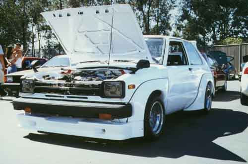

BODY KIT
BUBBLE FLARE
TRD STYLE FLARE 5pc.
TRD STYLE REAR WING
TRD STYLE KIT (6pc. Inc. rear wing)
WHEELS
PANASPORT 13 X 6
13 X 7 1pc.
13 X 7 3pc.
13 X 8 3pc.
13 X 9 3pc.
14 X 6 1pc.
SPACER, aluminum billet, pair, 1"
SPACER, aluminum billet, pair, 2"
SAFETY EQUIPMENT
ROLL BAR STREET
RACE
W/ BOLT IN CROSS BRACE
W/ SEAT BRACKET
BRAKES
PADS FRONT PBR/REPCO METAL
TRD RALLY DS11 U=.31 760c
SPORT DRIVING ST. (no asbestos) 3410F U=.42 660c
RACE METAL U=.23 850c
SHOE REAR PBR/REPCO
TRD ST. VG-95 U=.33 540c
ROTOR FRONT CROSS-DRILLED
BRAKE LINE S.S. BRAIDED HOSE- SET
IGNITION
NGK WIRE SET RC-TE87
TRD WIRE SET 90919-KP651
SPARK PLUG 4K BRE527Y-11
5K BRE529Y-11
CLUTCH
CENTERFORCE I CF139508
CENTERFORCE T.O. BEARING 202
TRD COVER 31210-KE302
DISC SPORT 31250-KE004
METAL 31250-KP662
L.S.D.
TRD 78.2-82.7 41307-KP601
82.8-84.1 41307-KP702
SUSPENSION
LENGTH MAX LENGTH MIN
TRD STREET ( F ) 577 404
( R ) 542 325
TRD RACE ( F ) 575 395
ADJ.-8 ( R ) 475 293
TRD RALLY ( F ) 577 404
( R ) 577 365
TOKICO HP ( F ) 575 395
( R ) 475 293
TOKICO ADJ. ( F )
(5-WAY ADJ.)( R )
SPRINGS
TOYSPORT RACE ( F ) K=5.1
( R ) K=5.0
TRD RALLY ( F ) K=2.1
( R ) K=2.2
STRUT BAR
CUSCO ( F ) AS 100 510
CUSCO ( R ) AS 100 511
ADJUSTABLE CAMBER PLATE
CUSCO ( F ) AJ 100 410
For any inquiries, please call 213-755-1177 or email us.